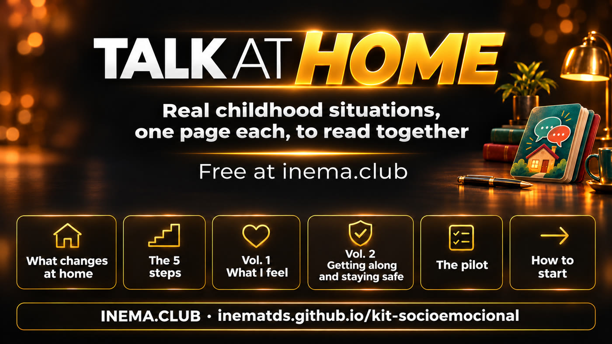
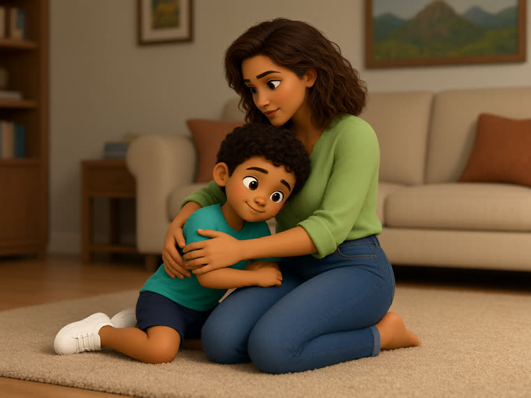

Your child will feel angry, be left out, or get teased. With Talk at Home, you can talk about it first.
There’s an illustrated page for every childhood situation. Your child looks at the pictures as you read, and together you decide what to do when it happens.
Talk at Home is a free kit of illustrated pages for parents, teachers, and caregivers to read with children ages 3 to 13. Each page shows a common situation (anger, a broken toy, a teasing classmate) and what the child can do, step by step, without lashing out and asking for help when needed. Your child does not need to know how to read. They can follow the pictures while you read the text. The map of 128 situations is available in two volumes, along with a 5-page pilot to download and print in cartoon or 3D style.
What you gain
Talk about it before the hard moment comes
When anger takes over or a classmate teases your child, there’s no time to teach. There’s time to remember what you’ve already talked about.
Today
The lesson comes at the worst time
Your child yells, pushes, or keeps quiet. You explain afterward, while they’re crying, and nothing sticks.
With the kit
The lesson comes in a calm moment
You read a page together on a quiet evening. When the situation comes up, your child has already seen it and has words ready to say.
🗣️ Words for feelings
Your child learns to say “I’m angry” instead of showing it with their body.
🧭 Steps they can use again
The same 5 steps on every page: your child learns the path, not just the rule.
🤝 Asking for help without shame
Every page shows who can help. Asking for help becomes part of the plan, not a failure.
Everyday use
How this can change life at home
Three common moments, before and after reading a page together.
🧱 A sibling knocks down the tower
Today: yelling, pushing, punishment.
With page 9: your child stops, breathes, and says, “I’m angry. I liked that tower.” If the feeling doesn’t pass, they call you.
🐴 Their favorite toy breaks
Today: endless crying and the feeling that everything is ruined.
With page 33: your child gathers the pieces, asks for help fixing the toy, and learns that many things can be repaired.
🪑 A classmate kicks their chair
Today: they kick back or put up with it for weeks.
With page 97: they use a calm, firm voice, tell the teacher, and tell you at home if it continues.
10
minutes a night: one page, two questions.
1
one situation at a time. No marathon.
0
apps or videos: print the page or show it on a tablet, and that's it.
2
questions at the end of each page to start a conversation.
How it works
The same 5 steps on every page
Like a traffic light your child learns once and uses at every crossing.

1
Notice
What happened and how I feel. I name the feeling.
2
Stop
I breathe slowly before I react. I step away a little if I need to.
3
Think
One choice that makes things worse and one that helps.
4
Act
I choose what helps and use words I’m ready to say.
5
Ask for help
When I can’t handle it alone, I find an adult. That takes strength.
📘 Volume 1 · What I feel
A 6-panel comic, one panel for each step, plus a happy ending. Anger, fear, frustration, surprises at home, school, changes, and doctor visits. Made for younger children: little text, lots of pictures.
📗 Volume 2 · Getting along and staying safe
A scene, what is happening, what doesn’t help and what to try saying, who can help, and a family conversation. Friendship, exclusion, teasing, blame, threats, and the internet.
What the kit does not promise: It isn’t therapy and won’t solve everything on its own. It opens a conversation and gives your child a plan to remember. Volume 2 has one firm rule: never teach retaliation or mockery; safety comes before any object; always involve an adult when there is force, a threat, a group, or repeated behavior.
Who it’s for
Who uses it and what they get
The illustrations below are from the pilot.

👨👩👧 Parents
One conversation each night about what may happen at school or at home, with words ready to use.
🏫 Teachers
A page to display during a class conversation about getting along and bullying, with questions at the end for the group.
🧸 Grandparents and caregivers
A simple way to talk about feelings without lecturing: the page handles the hard part, and you just read it together.
The map
128 situations in two volumes
8 chapters per volume, 8 situations per chapter. Each has an age range: P (3 to 6), M (7 to 10), G (11 to 13). Open a chapter to see the list.
📘 Volume 1 · What I feel
situations 1 to 64
Ch. 1 · What is this feeling?
What is this feeling?
Where a feeling shows up in my body
A small feeling or a big one?
I can feel two things at once
Other people feel things differently than I do
When I don’t know what I’m feeling
Putting my feelings into words
All feelings are okay; not all actions are okay
Ch. 2 · When feelings grow
When I feel angry ✅ pilot
When I feel frustrated
When I feel scared
When I feel worried
When I feel sad and don’t know why
When I feel embarrassed
When I feel jealous of my sibling
When I envy a friend
Ch. 3 · Finding my calm again
Breathe slowly (balloon breathing)
Count to 10 and step away a little
My calm-down corner
My body can help me calm down
A small problem or a big problem? ✅ pilot
Waiting for my turn
Waiting for something I really want
Stopping when my body feels too wound up
Ch. 4 · Things don’t always go my way
When I lose a game
When I hear “no”
When plans change at the last minute
When I make a mistake
When I can’t do it on the first try
When I get a low grade
When my drawing doesn’t look the way I imagined
When it was my fault and I need to say so
Ch. 5 · Things go wrong at home
When my favorite toy breaks ✅ pilot
When rain ruins our outing
When my sibling touches my things
When thunder scares me
When our visitors leave
When the food isn’t something I like
When I have to turn off the screen
When I wake up from a bad dream
Ch. 6 · In the classroom
When class feels boring
When I finish before everyone else
When I don’t understand the lesson
When I’m afraid to ask
When homework feels too hard
Before a test
Giving a presentation in front of the class
When I get distracted and miss the lesson
Ch. 7 · Changes and new places
My first day at a new school
When we move to a new home
When a new baby arrives
Staying with someone else when my parents go out
A crowded, noisy place
Traveling and sleeping away from home
When I have two homes
When a pet dies
Ch. 8 · Health and my body
Going to the doctor
Getting a vaccine
Going to the dentist
Medicine that tastes bad
Being sick and unable to play
Getting a haircut
Going to bed on time
When someone in my family is sick
📗 Volume 2 · Getting along and staying safe
situations 65 to 128
Ch. 1 · Making and keeping friends
Joining a game that has already started
When we want to play different things
Sharing a toy
When my friend plays with someone else
Giving a real apology
When my friend apologizes to me
A true friend × a friend who only uses me
When a friend tells my secret
Ch. 2 · When I’m left out
“You can’t play with us”
When no one sits with me at recess
No one picks me for the team
I wasn’t invited to the party
The group agreed not to talk to me
I was left out of the class group chat
When I’m the new kid
When I leave someone out
Ch. 3 · Laughter that hurts
When people laugh at me
A nickname I don’t like
They make fun of my clothes, hair, or body
They imitate the way I talk
Joking or teasing?
When someone says I’m stupid
When it happens every day (that’s bullying)
Standing up for myself without insulting anyone
Ch. 4 · When I get blamed
They say I took something I didn’t take
They want me to admit to something I didn’t do ✅ pilot
Someone spreads a lie about me
The teacher believes the other person
A classmate wants to copy my test
I saw who did it and I’m afraid to tell
Telling an adult × tattling
When it really was my fault
Ch. 5 · Force, threats, and fear
Someone behind me won’t stop bothering me ✅ pilot
When someone won’t let me pass
Someone takes my lunch or school supplies
Someone threatens to hit me
A group surrounds me
Someone dares me to fight
Someone hurts me and says, “I didn’t mean to”
My body is worth more than any object
Ch. 6 · My body belongs to me (released only after specialist review)
I can say “no” to a hug or a kiss
Body parts that are mine alone
A good secret × a bad secret
When someone asks me to do something strange
When someone makes me uncomfortable
Adults I trust
Getting lost in a crowded place
When a stranger starts talking to me
Ch. 7 · On my phone and online
People say mean things about me in a group chat
Someone posts my photo without asking
A stranger messages me in a game
Someone asks for my photo or password
A dangerous video challenge
I see something scary on a screen
Screenshot, block, and tell an adult
Before I post: how would I feel if it were me?
Ch. 8 · When I see it happen to someone else
I see someone being teased
Everyone laughs, but I don’t think it’s funny
Staying beside someone who is alone
Telling an adult without putting myself at risk
My friend is the one bullying someone
I bullied someone and want to make it right
A classmate who acts differently
Making school a better place
How to start
Tonight, with one page
No installation needed. Just the pilot PDF.
1
Download the pilot in the style your child likes
The same 5 pages in A4 PDF, with two illustration styles. The cartoon version uses less printer ink.
Start with something familiar: if the siblings fought this week, try page 9. Print it or show it on a tablet.
3
Read together and ask the 2 questions
Your child looks at each panel while you read the caption. At the end, ask the “Family Conversation” questions. Take your time. It isn’t a test, and any answer is okay.
🤖 For AI users (optional): ask for a page about your child's situation
If you don't use an AI assistant, skip this part: the pilot pages are enough. Claude Code and Codex are AI assistants that read the kit's files (the map and the pages) and write a new page in the same format.
💬 Want a page about something your child is going through?
If you use Claude Code or Codex, paste the prompt below. The AI reads the kit, writes a new page in the same format, and shows you the text before creating any images.
Read the github.com/inematds/kit-socioemocional repository, especially MAPA.md and the piloto/roteiro.json file.
My child is [AGE] years old and is going through this: [DESCRIBE THE SITUATION IN 2 OR 3 SENTENCES].
Write a new page in the same format as the kit (Volume 1 for feelings or unexpected events; Volume 2 for getting along), with the 5 steps, a ready-to-use phrase for the child, who can help, and two questions for us to discuss.
Rules: no retaliation or mockery, use language that fits the child’s age, and show me only the text. Don’t generate images or change files until I say yes.
Want to generate the illustrations too? The technical steps are in the project’s English README.
The background
Existing methods, adapted for home
The kit doesn’t invent the teaching approach. It brings familiar ideas together in an illustrated, free format.
📖 Social Stories
Created by Carol Gray in 1993: short first-person stories that show a situation before it happens. They began as a tool for autistic children and are now used with all kinds of children.
🌡️ RULER (Yale)
Recognize, understand, label, express, and regulate emotions. That’s where the idea of naming feelings and measuring how big they are comes from. About the method
🚦 The Zones of Regulation
Emotional states shown as colors, each with its own set of strategies, and the question “small problem or big problem?” Free materials
In all honesty: research on Social Stories has mixed results. They work better for reducing a difficult behavior than for teaching a new skill (2020 review). That’s why the kit doesn’t promise results. It opens a conversation. If your child is struggling a lot or the situation keeps happening, talk to the school and a professional.
The pilot
5 pages are ready in two styles for you to choose from
Three from Volume 1 and two from Volume 2, with the same text. Show your child both styles and let them choose. Click to see a larger image. (The pilot pages are in Portuguese.)
✏️ Cartoon style
children’s book line art, white background, uses little ink
90 · They want me to admit to something I didn’t do
44
illustrations across 10 pages (22 per style), plus character and wooden horse references.
6 × 3
illustrations redone: 6 in 3D and 3 in cartoon style (a repeated character, a copied reference sheet, and switched roles).
0
letters inside the images: text is added on top, always correct and easy to translate.
4
regular characters: Leo, Bia, the mother, and the teacher.
What still needs work: characters don’t always look exactly the same from panel to panel (in 3D, Bia’s headband disappeared in one panel; in both styles, an object changed size until it got its own reference image). For the full kit, each recurring character and object will have a reference image.
Questions
Common questions
Does my child need to know how to read?
No. They follow the pictures while you read. Older children can read it themselves and share what they think.
Does it cost anything?
No. The kit is free, like all the content on inema.club.
Does it replace a psychologist or the school?
No. It’s a tool for talking at home. Ongoing bullying, serious fear, or a change in behavior are reasons to talk to the school and a professional.
Is it for autistic children?
Social Stories began as a tool for autistic children, and the visual format can help. Talk with your child’s therapist, who can adapt the page for them.
Why doesn’t the kit teach children to fight back?
Fighting back often makes things worse and can lead to injury. A firm voice, distance, and a trusted adult can keep your child safe without starting another fight.
When will the other pages be ready?
The map of 128 situations is ready. Pages will be released chapter by chapter after the pilot. “My body belongs to me” will be released only after specialist review.
What situation do you wish you had talked about with your child sooner? Read the first page today: free on inema.club, right on the internet.